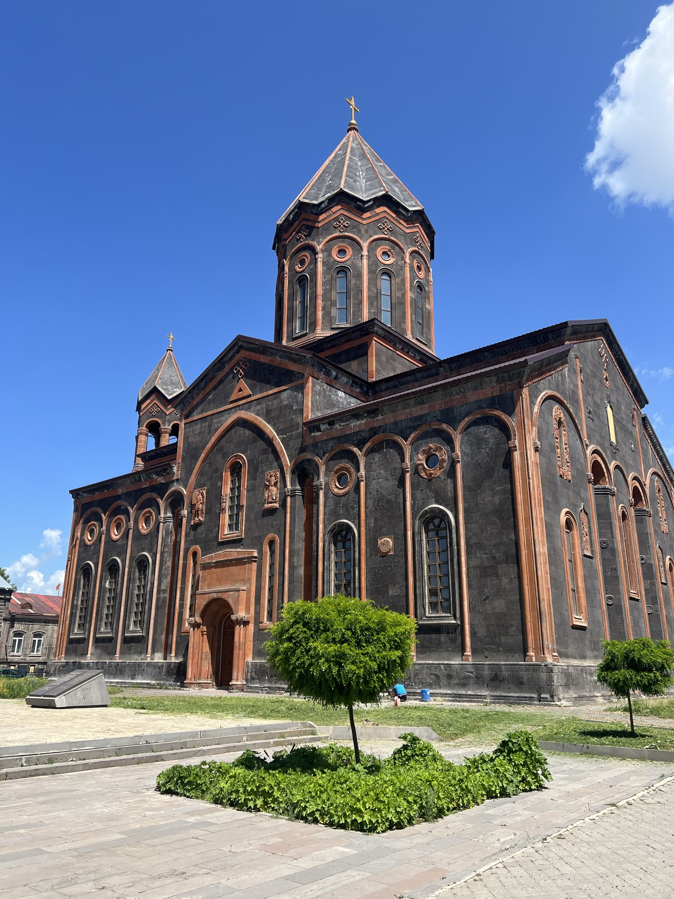

About Me

Hi, I’m Vardan
I recently graduated from California State University, Sacramento where I obtained a Bachelor of Science degree in Computer Science.
My education has equipped me with strong software engineering concepts as well as problem-solving skills.
I have honed my programming and software development skills working on many projects both individually and as a team.
I am passionate about all things tech, particularly in software creation.
This passion started at a very young age when I decided to learn how to make my own video game.
After doing some research, I found out that in order to make one I would have to learn programming.
I remember watching my first YouTube tutorial on C++ and displaying the classic "Hello World!" to the console.
This was enough to hook me in. The more I learned, the more I knew this was a career I wanted to pursue.
Now, I'm eager to kick off my career and put my skills into action.
-
Hobbies
Travel
One of my favorite things to do is to travel. I have been fortunate to visit Armenia in the summer of 2023. This was special because I had not been back since I was ten years old. It was an amazing experience where I got to see all my relatives again while seeing some of the most beautiful and historic sites of Armenia. Here are some of the pictures from my trip!
Garni TempleChurch in GyumriSymphony of RocksSymphony of RocksVideo Games
One of my favorite hobbies is video games. In the words of Phil Fish, "Video Games are the ultimate art form. It's the ultimate media. I mean, it's the sum total of every expressive medium of all time, made interactive".
I completely agree with this statement as video games today can have incredible stories, writing, art, and music. They are able to do all of this, while simultaneously immersing the player in the world they have crafted through interactivity.
My Current top 5 video games are:- Elden Ring
- Red Dead Redemption 2
- Witcher 3
- The Legend of Zelda: Tears of the Kingdom
- Kingdom Come: Deliverance
Soccer
My favorite sport is soccer. I mostly enjoy watching the premier league however I also enjoy watching exceptional players and teams throughout the sport. The last world cup in Qatar was amazing to watch and I am excited that the next tournament will be held in North America!
My top 5 players:- Lionel Messi
- Kylian Mbappe
- Henrikh Mkhitaryan
- Neymar Jr.
- Cristiano Ronaldo